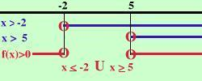

|
x2 - 3x - 10 Considero l'equazione associata x2 - 3x - 10 = 0 Risolvo x1 = -2 x2 = 5 Quindi la disequazione e' equivalente a (x+2) (x-5) Devo risolvere le due disequazioni (x+2) (x-5) e considerare dove i segni sono concordi perche' devo trovare i valori dove tutta l'espressione e' positiva, inoltre devo anche vedere dove l'espressione si annulla Risolvo la prima: x + 2 Risolvo la seconda x - 5 faccio lo schema x x f(x) + + + + (-2) - - - - - - (5) + + + + + + + + + f(x) indica l'espressione di partenza La parentesi tonda indica che l'espressione si annulla nel punto Io devo cercare dove l'espressione e' positiva o nulla e questo succede per x oppure in altra notazione  |